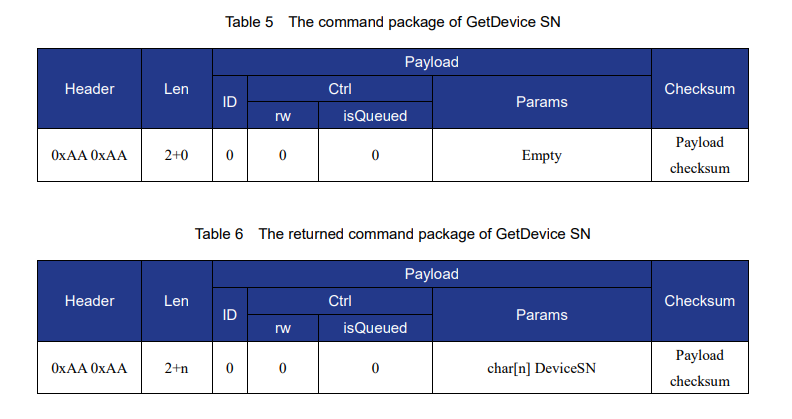

Einleitung
Wir wollen uns an ausgewählten Beispielen mit der Nutzung der verschiedenen Schnittstellen des Dobot Magician auseinandersetzen.
Dabei geht es um die Grundlagen der Kommunikation, die Möglichkeiten der Steuerung und die praktische Nutzung in unseren Projekten.
Die Nutzung von Sensoren und Aktoren über den Dobot Magician ist doch sehr eingeschränkt.
I²C-Kommunikation, Bildverarbeitung, AI-Funktionen und komplexe Sensorik ist nicht möglich,
da die Firmware des Roboters neben der Kommunikation nur die Steuerung der Bewegungen und die Ansteuerung der Endeffektoren erlaubt.
Die eigentliche Intelligenz muss auf einem externen Rechner oder Mikrocontroller liegen, der die Steuerbefehle an den Roboter sendet.
Dobot Magician übernimmt ...
... Aufgaben, die er aufgrund seiner Schnittstellen selbst erledigen kann.
- Über die zwei vorhandenen Schrittmotoranschlüsse kann er Schrittmotoren direkt ansteuern.
- Mittels der zwei 12V-Ausgänge können externe Geräte wie Relais, Pumpen oder Ventile geschaltet werden.
- Nicht genutzte digitale Ein- und Ausgänge können weitere Sensoren und Aktoren angebunden werden.
- Der analoge Eingang kann zur Messung von Spannungen oder Strömen genutzt werden.
ESP32 übernimmt ...
... verschiedene Aufgaben, die der Dobot Magician nicht selbst erledigen kann oder muss.
Dabei können seine Sensoren und Aktoren am Dobot angebaut sein oder
im Bereich der Arbeitsfläche des Roboters liegen.
Die Verarbeitung der Sensordaten und die Steuerung der Aktoren kann auf dem ESP32 erfolgen
oder per Kommunikation mit dem Steuerprogramm auf dem PC weitergeleitet und dort verarbeitet werden.
Das Programm sendet dann die Steuerbefehle an den Dobot Magician bzw. ESP32.
Weitere MCUs können über diesen ESP32 auf verschiedenste Weise in das Gesamtsystem eingebunden werden.
Dobot Magician: Kommunikation per USB-Serial
Für mich stellte sich die Frage, wie der PC mit dem Dobot Magician über die serielle Schnittstelle kommuniziert.
In der Dokumentation Dobot Communication Protocol V1.1.5
ist die Kommunikation beschrieben.

Die Befehle werden in Form von API-Funktionen beschrieben, die der PC an den Dobot Magician sendet.
Die API-Funktionen sind in der Dokumentation in Tabellenform beschrieben.
Die Befehle werden nicht als Klartext, sondern als binäre Datenpakete gesendet.
Doch wie sieht das konkret aus?
ChatGPT bringt mit der ausführlichen Antwort zur seriellen Anfrage GetDeviceSN Licht in die Dunkelheit.
Und GitHub übernimmt das Aufbereiten der Informationen in diese Seite, Umsetzung der Markdown-Zusammenfassung des ursprünglichen Chats,
Auslagerung des ausführlichen Beispiels auf separate Seiten und das Syntax-Highlighting.
Das ist schon irre, was man mit ChatGPT und GitHub alles machen kann.
Und wieviel Zeit ich mit Suchen, Auswerten und Aufbereiten damit sparen kann.